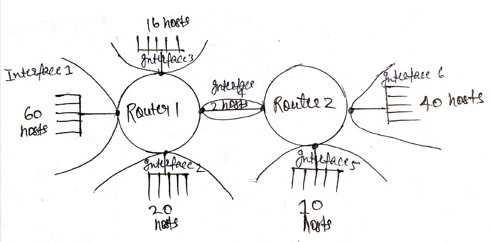

All about Subnetting
There are three ways you can protect or manage the IPv4, which are as follows -
1. Use Private IP ( 10.0.0.0 for class A, 172.16.X.X for class B, 192.0.0.0 for class C)
2. Use IPv6
3. Do Subnetting
Subnetting
-> What is subnneting and why do we need it?
-> Always remember, there must be different network on all the different interfaces connected to the router. That means all the interface has different n/w id.
-> What is router? Inter-networking device. We generally use it if we need to establish conenction b/w two different n/w.
-> If we have to establish conenction within network or devices having same n/w id then we will use switch.
-> By default CIDR value for class A is 8, class B is 16, class C is 24.
-> It is network within a network or logically divison of IP addresses.
-> There are two ways of doing subnneting, according to hosts requirement and according to n/w requirement.
i). According to hosts requirement
1. First find out total number of hosts, on
